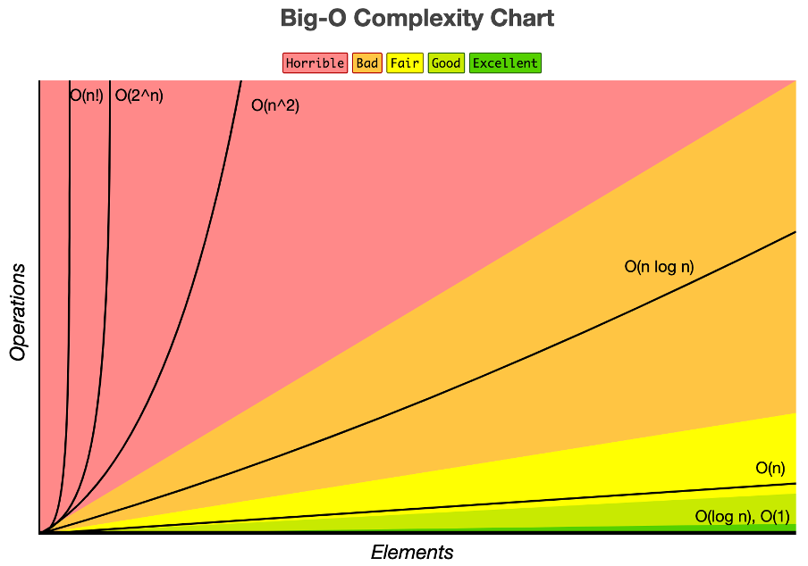
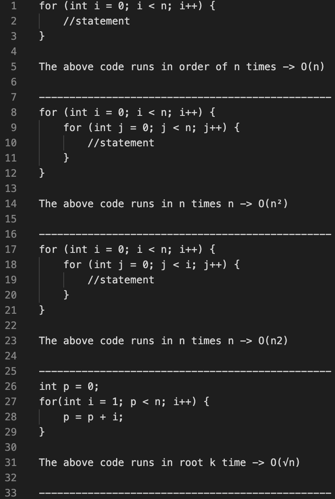
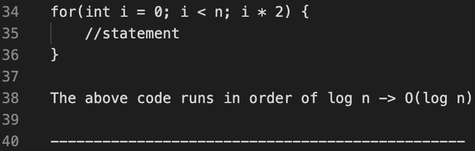

Big Oh
Big Oh is a notation that is used to calculate and describe the time complexity of a method. This allows us to compare methods with one another.

- O(1) -> Order of 1, known as constant time. The time complexity remains the same regardless of the input size (e.g. assignments, math functions).
- O(n) -> Order of n, known as linear time. The time complexity grows directly to the input size (e.g. single for loop iterating over the input once).
- O(n2) -> Order of n squared, known as quadratic time. The time complexity grows exponentially in relation to the input size (e.g. nested for loop, requiring multiple iterations over the inner loop).
- O(log n) -> Order of log n, known as logarithmic time. The time complexity grows in relation to the log of n (e.g. looping over the input and incrementing the iterator by a value greater than one, so not all indices in the input are accessed).
- Asymptotic behaviour / analysis -> evaluation of the algorithm performance in terms of its input size.
- Best case -> scenario that requires the least number of instructions to achieve the goal of the algorithm.
- Average case -> scenario that requires the average number of instructions to achieve the goal of the algorithm.
- Worst case –> big oh typically looks at worst case scenario, that is the scenario that would take the longest time. Even though in practice, some executions of the method would be shorter or longer depending on the input.
- Frequency count method –> counting the number of statements that get executed in the method. Iterations count for the number of times that they can be executed (n + 1 times usually).

